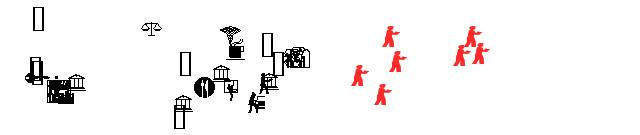

|
|||||||||||
| PREV CLASS NEXT CLASS | FRAMES NO FRAMES | ||||||||||
| SUMMARY: NESTED | FIELD | CONSTR | METHOD | DETAIL: FIELD | CONSTR | METHOD | ||||||||||
java.lang.Object
|
+--com.esri.mo2.map.draw.BaseSymbol
|
+--com.esri.mo2.map.draw.BaseFontSymbol
|
+--com.esri.mo2.map.draw.TrueTypeMarkerSymbol
This TrueTypeMarkerSymbol draws the character of true type font. Character is a decimal representation of character code in ASCII.
The symbol support also the most of SimpleTextSymbol attributes. The example:
TrueTypeMarkerSymbol ttmSymbol = new TrueTypeMarkerSymbol();

ttmSymbol.setFont( new ArcFont( "ESRI Cartography", java.awt.Font.PLAIN, 12 ) );
ttmSymbol.setCharacter("252");
SimpleTextSymbol| Field Summary | |
static double |
DEFAULT_ANGLE
This constant defines the default angle. |
static String |
DEFAULT_ANGLEFIELD
This constant defines the default angle fieldname. |
static boolean |
DEFAULT_ANGLEPRESENT
This constant defines the default value of anglepresent. |
static boolean |
DEFAULT_OVERLAP
This constant defines the default overlap value. |
static int |
DEFAULT_ROTATEMETHOD
This constant defines the default rotatemethod. |
static String |
DEFAULT_TEXT
This constant defines the default text. |
static boolean |
DEFAULT_USECENTROID
This constant defines the default usecentroid value. |
static int |
ROTATEMETHOD_ARITHMETIC
This constant defines the rotate method to the arithmetic. |
static int |
ROTATEMETHOD_GEOGRAPHIC
This constant defines the rotate method to the "geographic". |
static int |
ROTATEMETHOD_MOD_ARITHMETIC
This constant defines the rotate method to the mod_arithmetic. |
| Fields inherited from class com.esri.mo2.map.draw.BaseFontSymbol |
DEFAULT_BLOCKOUT, DEFAULT_COLOR, DEFAULT_FONT, DEFAULT_GLOWING, DEFAULT_OUTLINE, DEFAULT_SHADOW, LABELMODE_FULL, LABELMODE_NUMERICONLY, PRINTMODE_ALLOWER, PRINTMODE_ALLUPPER, PRINTMODE_NONE, PRINTMODE_PRETTYPRINT, PRINTMODE_TITLECAPS |
| Fields inherited from class com.esri.mo2.map.draw.BaseSymbol |
DEFAULT_ANTIALIASING, DEFAULT_TRANSPARENCY |
| Constructor Summary | |
TrueTypeMarkerSymbol()
|
|
| Method Summary | |
void |
draw(FeatureGeometry g,
Graphics2D g2,
Object values)
This method draws the symbol in graphics context. |
double |
getAngle()
Obtains the Angle as double value. |
String |
getAngleField()
Obtains the AngleField value. |
String |
getCharacter()
Obtains the Character value. |
int |
getFieldCount()
Obtains the number of fields. |
String |
getFieldName(int index)
Obtains the FieldName as string at the specified index. |
boolean |
getOverlap()
Obtains the overlap value. |
int |
getRotateMethod()
Obtains the current value of rotate method. |
boolean |
getUseCentroid()
Obtains the UseCentroid value. |
void |
setAngle(double angle)
Sets the AngleField value. |
void |
setAngleField(String angleField)
Sets the AngleField value. |
boolean |
setCharacter(String text)
Sets Character value. |
void |
setOverlap(boolean overlap)
Sets the overlap value. |
void |
setRotateMethod(int rm)
Sets the RotateMethod value. |
void |
setUseCentroid(boolean usecentroid)
Sets the UseCentroid value. |
| Methods inherited from class com.esri.mo2.map.draw.BaseFontSymbol |
drawTextWithEffect, getBlockOut, getColor, getFont, getGlowing, getMaximumSymbolSize, getOutline, getShadow, getSizeTextWithEffect, intToStringLabelMode, intToStringPrintMode, intToStringStyle, setBlockOut, setColor, setFont, setGlowing, setOutline, setShadow, stringToIntLabelMode, stringToIntPrintMode, stringToIntStyle, stringToNewMode |
| Methods inherited from class com.esri.mo2.map.draw.BaseSymbol |
CalcCentroid, clone, filterShadowImage, filterTransparentImage, getAntialiasing, getRenderer, getTransparency, hasTransparency, setAntialiasing, setRenderer, setTransparency, switchTransform |
| Methods inherited from class java.lang.Object |
equals, finalize, getClass, hashCode, notify, notifyAll, toString, wait, wait, wait |
| Field Detail |
public static final int ROTATEMETHOD_GEOGRAPHIC
public static final int ROTATEMETHOD_ARITHMETIC
public static final int ROTATEMETHOD_MOD_ARITHMETIC
public static final int DEFAULT_ROTATEMETHOD
ROTATEMETHOD_MOD_ARITHMETIC,
Constant Field Valuespublic static final double DEFAULT_ANGLE
public static final String DEFAULT_ANGLEFIELD
public static final String DEFAULT_TEXT
public static final boolean DEFAULT_OVERLAP
public static final boolean DEFAULT_USECENTROID
public static final boolean DEFAULT_ANGLEPRESENT
| Constructor Detail |
public TrueTypeMarkerSymbol()
| Method Detail |
public void draw(FeatureGeometry g,
Graphics2D g2,
Object values)
g - the Geometryg2 - the graphics context for renderingvalues - the values of attribute fields, null == is ok and means no field valuesSymbol.draw(com.esri.mo2.cs.geom.FeatureGeometry, java.awt.Graphics2D, java.lang.Object)public int getFieldCount()
getFieldCount in interface SymbolgetFieldCount in class BaseSymbolpublic String getFieldName(int index)
getFieldName in interface SymbolgetFieldName in class BaseSymbolindex - is index of internal fieldname collection
getFieldCount()public void setAngleField(String angleField)
angleField - is the name of fieldpublic String getAngleField()
public void setAngle(double angle)
angle - is angle in degrees 0-360public double getAngle()
public boolean setCharacter(String text)
text - is a code string representation of given character
public String getCharacter()
public void setOverlap(boolean overlap)
overlap - is the overlap valuepublic boolean getOverlap()
public void setUseCentroid(boolean usecentroid)
usecentroid - is the UseCentroid valuepublic boolean getUseCentroid()
public void setRotateMethod(int rm)
rm - is the RotateMethod valueROTATEMETHOD_GEOGRAPHIC,
ROTATEMETHOD_ARITHMETIC,
ROTATEMETHOD_MOD_ARITHMETICpublic int getRotateMethod()
|
|||||||||||
| PREV CLASS NEXT CLASS | FRAMES NO FRAMES | ||||||||||
| SUMMARY: NESTED | FIELD | CONSTR | METHOD | DETAIL: FIELD | CONSTR | METHOD | ||||||||||